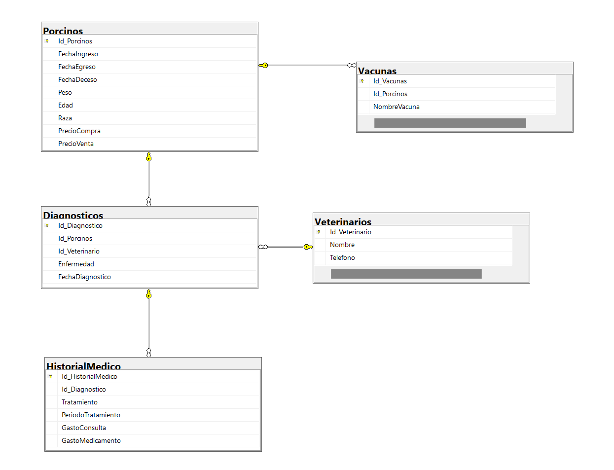

[Historial Medico]
Diseño de la base de datos del subsistema

Normalización de la Base de Datos
La normalización es un proceso que organiza los datos en una
base de datos para reducir la redundancia y mejorar la integridad.
Las primeras tres formas normales son fundamentales para lograr esto.
Primera Forma Normal (1NF)
-
Definición:
Una tabla está en 1NF si todos los atributos contienen
valores atómicos, es decir, no se permiten conjuntos de valores o
listas, y cada columna debe contener un solo valor.
- Ejemplo en la Tabla Veterinarios:
Cada veterinario tiene un único Nombre, Telefono y Email.
No se permiten múltiples teléfonos o correos en una sola fila.
Segunda Forma Normal (2NF)
-
Definición: Una tabla está en 2NF si está en 1NF y todos los atributos
no clave dependen completamente de la clave primaria. Esto significa
que no deben existir dependencias parciales.
- Ejemplo en la Tabla Diagnosticos:
La clave primaria es Id_Diagnostico, y todos los demás campos (Id_Porcinos,
Id_Veterinario, Enfermedad, FechaDiagnostico) dependen completamente de esta
clave.
-
Si tuviéramos un campo que dependiera solo de Id_Porcinos o Id_Veterinario,
eso violaría 2NF.
Tercera Forma Normal (3NF)
-
Definición: Una tabla está en 3NF si está en 2NF y todos los atributos no
clave son mutuamente independientes, es decir, no hay dependencias transitivas.
- Ejemplo en la Tabla HistorialMedico:
La clave primaria es Id_HistorialMedico, y todos los demás campos (Id_Diagnostico,
Tratamiento, PeriodoTratamiento, GastoConsulta, GastoMedicamento) dependen solo de
esta clave.
-
No debe haber un campo que dependa de otro campo no clave, como un campo que dependa
de Tratamiento para determinar el GastoConsulta.
Pertenencia en la arquitectura de la base de datos
Tabla Porcinos
Esta tabla almacena información sobre todos los porcinos, independientemente de su estado de salud.
Esto es fundamental para la gestión de la granja, el seguimiento de la producción y la
salud y, el manejo financiero.
Campos de la tabla
-
Id_Porcinos es crucial como identificador único, ya que permite gestionar y referenciar a
cada porcino de manera efectiva.
-
FechaIngreso es fundamental para rastrear el tiempo que un porcino ha estado en la granja,
lo que impacta en la planificación de su manejo y producción.
-
Peso es vital para evaluar la salud y el crecimiento del porcino, lo que influye en
decisiones sobre alimentación y manejo.
-
PrecioCompra y PrecioVenta son esenciales para la gestión financiera, ya que permiten
calcular la rentabilidad del negocio y asegurar que se mantengan márgenes de beneficio adecuados.
Tabla Vacunas
Registra las vacunas administradas a los porcinos, lo que es esencial para el control de
enfermedades y la salud general de los animales. La vacunación es un componente clave en la
prevención de enfermedades.
Campos de la tabla
-
Id_Vacunas es esencial como identificador único para cada registro de vacunación,
permitiendo una gestión efectiva de las vacunas administradas.
-
NombreVacuna es importante porque identifica el tipo de vacuna administrada, lo que
es fundamental para garantizar que los porcinos reciban la inmunización adecuada
contra enfermedades específicas.
-
FechaVacunacion es vital para registrar el momento de la vacunación, lo que ayuda
a programar futuras dosis y a mantener un control sobre el estado de salud del porcino.
Relación con la tabla Porcinos
-
Id_Porcinos es crucial, ya que vincula cada vacunación a un porcino específico,
lo que facilita el seguimiento del historial de salud y vacunación de cada animal.
Tabla Diagnosticos
Registra los diagnósticos realizados a los porcinos, lo que es fundamental para el seguimiento
de la salud animal y la administración de tratamientos. Esta tabla permite identificar
problemas de salud y su evolución.
Campos de la tabla
-
Id_Diagnostico es crucial como identificador único para cada diagnóstico, lo que permite
un seguimiento eficiente de los registros médicos.
-
Enfermedad es vital para documentar el problema de salud identificado, permitiendo el análisis
de patrones de enfermedades y la planificación de tratamientos.
-
FechaVacunacion es vital para registrar el momento de la vacunación, lo que ayuda
a programar futuras dosis y a mantener un control sobre el estado de salud del porcino.
-
FechaDiagnostico es fundamental para registrar el momento en que se realizó el diagnóstico, lo que
es crucial para el seguimiento de la evolución de la enfermedad y la efectividad de los tratamientos.
Relación con la tabla Porcinos y Veterinario
-
Id_Porcinos es esencial para vincular cada diagnóstico a un porcino específico, facilitando
el acceso al historial de salud de cada animal.
-
Id_Veterinario es importante para identificar al profesional que realizó el diagnóstico,
lo que ayuda a mantener la responsabilidad y la trazabilidad de la atención médica.
Tabla veterinario
Esta tabla almacena información vital sobre los veterinarios que atienden a los porcinos.
Es esencial para rastrear quién realiza diagnósticos y tratamientos, lo que es crucial para
la rendición de cuentas y la gestión de la atención médica.
Campos de la tabla
-
Id_Veterinario es esencial como identificador único para cada veterinario, lo que permite
gestionar su información de manera eficiente y asegurar que cada registro sea distintivo.
-
Los campos Nombre, Telefono, y Email son igualmente importantes, ya que permiten establecer
una comunicación efectiva con el veterinario
Tabla HistorialMedico
Compila toda la información relacionada con el tratamiento de un porcino, incluidos los gastos
asociados. Esto es crucial para la gestión financiera de la atención médica y el seguimiento
de la eficacia de los tratamientos.
Campos de la tabla
-
Id_HistorialMedico es esencial como identificador único para cada registro de historial médico,
lo que permite un seguimiento claro y organizado de los tratamientos realizados.
-
Tratamiento es crucial para documentar las intervenciones realizadas, lo que es fundamental
para evaluar la eficacia de los tratamientos a lo largo del tiempo.
-
PeriodoTratamiento permite registrar la duración del tratamiento, lo que es importante para el
seguimiento de la salud del animal y el cumplimiento de los protocolos veterinarios.
-
GastoConsulta y GastoMedicamento son vitales para la gestión financiera, ya que permiten calcular
los costos asociados al tratamiento de cada porcino, ayudando a evaluar la rentabilidad y
sostenibilidad del manejo sanitario.
Relación con la tabla Diagnosticos
-
Id_Diagnostico vincula cada historial médico a un diagnóstico específico, facilitando el acceso
a la información sobre la salud del porcino y asegurando la coherencia en el tratamiento.
Funcionalidades de los Usuarios del subsistema
Estructura de la Base de Datos
La base de datos ha sido diseñada con un enfoque en la normalización, lo que significa que cada tabla
representa una entidad única y sus atributos. Esto facilita la gestión de datos y permite que
los usuarios accedan a la información de forma estructurada y coherente.
Funcionalidades del Dueño
El Dueño podrá gestionar la información de los porcinos de manera eficiente:
- Registrar y actualizar información de porcinos:
-
Al interactuar con la tabla Porcinos, el dueño puede agregar nuevos registros o modificar
existentes. Esto se puede implementar mediante formularios en una interfaz gráfica que
permita la entrada de datos de manera sencilla.
-
Cada vez que se registra o actualiza un porcino, se asegura que la información esté
disponible para otros usuarios, lo que facilita el seguimiento de la salud y el
manejo del animal.
-
Registrar vacunaciones:
-
La interacción con la tabla Vacunas permitirá al dueño ingresar datos sobre las vacunas
administradas. Esto no solo ayuda a mantener un control de salud, sino que también
asegura que la información esté actualizada y disponible para el veterinario.
Funcionalidades del Médico Veterinario
El Médico Veterinario tendrá acceso a funcionalidades que le permitirán
realizar diagnósticos y tratamientos de manera efectiva:
- Registrar diagnósticos:
-
Al utilizar la tabla Diagnosticos, el veterinario puede ingresar información
sobre la salud de cada porcino, lo que permite un seguimiento detallado de
las enfermedades. Esto se puede implementar mediante formularios que requieran
la entrada de datos específicos, como la enfermedad y la fecha del diagnóstico.
-
Este registro es esencial para mantener un historial médico completo,
lo que facilita la toma de decisiones en tratamientos futuros.
-
Registrar tratamientos y gastos:
-
La tabla HistorialMedico permitirá al veterinario documentar los tratamientos
realizados, sus periodos y los costos asociados. Esto es crucial para la gestión
financiera de la granja y para evaluar la eficacia de los tratamientos administrados.
-
Un sistema de gestión puede generar reportes sobre estos tratamientos, ayudando en
la planificación de recursos y en la evaluación del bienestar animal.
-
Actualizar vacunaciones:
-
El veterinario podrá modificar registros en la tabla Vacunas para reflejar cambios
en el estado de vacunación de los porcinos. Esto asegura que todos los registros
están actualizados y disponibles para futuros diagnósticos y tratamientos.
Separación de Responsabilidades por Tabla
Tabla Porcinos
-
Dueño:
-
Registrar nuevo porcino: Ingresar información sobre el porcino, incluyendo
fecha de ingreso, peso, edad, raza, precio de compra y venta.
-
Actualizar información de porcino: Modificar datos existentes, como fecha
de egreso, fecha de deceso, peso y otros atributos relevantes.
Tabla Vacunas
-
Dueño:
-
Registrar vacunación: Agregar registros de vacunas administradas a los
porcinos, incluyendo nombre de la vacuna y fecha de vacunación.
-
Médico Veterinario:
-
Actualizar registro de vacunación: Modificar detalles de las vacunas
administradas, como la fecha o el nombre de la vacuna, si es necesario.
Tabla Diagnosticos
-
Médico Veterinario:
-
Registrar un diagnóstico: Ingresar información sobre el diagnóstico de
un porcino, incluyendo la enfermedad, fecha del diagnóstico y el
veterinario responsable.
-
Actualizar diagnóstico: Modificar información existente relacionada con
diagnósticos previos, asegurando que la información esté actualizada.
Tabla HistorialMedico
-
Médico Veterinario:
-
Registrar un tratamiento: Ingresar detalles sobre tratamientos realizados,
incluyendo el tipo de tratamiento, duración, y gastos asociados (gasto de consulta y medicamento).
-
Actualizar historial médico: Modificar registros de tratamientos anteriores,
si se requiere ajustar información o costos.
Tabla Veterinarios
-
Dueño:
-
Consultar información de veterinarios: Visualizar los registros de
veterinarios para conocer quiénes están disponibles y sus datos de contacto.
-
Médico Veterinario:
-
Actualizar información personal: Modificar su propio registro, incluyendo
nombre, teléfono y email, si tiene permisos para hacerlo.
Código SQL para construir las tablas con las llaves foraneas
Script SQL para la Base de Datos
-- Crear base de datos
CREATE DATABASE HMedico
USE HMedico
-- Crear tabla Veterinarios
CREATE TABLE Veterinarios (
Id_Veterinario INT PRIMARY KEY IDENTITY(1,1),
Nombre VARCHAR(100) NOT NULL,
Telefono VARCHAR(15) NOT NULL,
Email VARCHAR(100) NOT NULL
);
-- Crear tabla Porcinos
CREATE TABLE Porcinos (
Id_Porcinos INT PRIMARY KEY IDENTITY(1,1),
FechaIngreso DATETIME NOT NULL,
FechaEgreso DATETIME NULL,
FechaDeceso DATETIME NULL,
Peso DECIMAL(10, 2) NOT NULL,
Edad INT NOT NULL,
Raza VARCHAR(50) NOT NULL,
PrecioCompra DECIMAL(10, 2) NOT NULL,
PrecioVenta DECIMAL(10, 2) NOT NULL
);
-- Crear tabla Diagnosticos
CREATE TABLE Diagnosticos (
Id_Diagnostico INT PRIMARY KEY IDENTITY(1,1),
Id_Porcinos INT NOT NULL,
Id_Veterinario INT NOT NULL,
Enfermedad VARCHAR(100) NOT NULL,
FechaDiagnostico DATETIME NOT NULL,
FOREIGN KEY (Id_Porcinos) REFERENCES Porcinos(Id_Porcinos),
FOREIGN KEY (Id_Veterinario) REFERENCES Veterinarios(Id_Veterinario)
);
-- Crear tabla HistorialMedico
CREATE TABLE HistorialMedico (
Id_HistorialMedico INT PRIMARY KEY IDENTITY(1,1),
Id_Diagnostico INT NOT NULL,
Tratamiento VARCHAR(100) NOT NULL,
PeriodoTratamiento INT NOT NULL,
GastoConsulta DECIMAL(10, 2) NOT NULL,
GastoMedicamento DECIMAL(10, 2) NOT NULL,
FOREIGN KEY (Id_Diagnostico) REFERENCES Diagnosticos(Id_Diagnostico)
);
-- Crear tabla Vacunas
CREATE TABLE Vacunas (
Id_Vacunas INT PRIMARY KEY IDENTITY(1,1),
Id_Porcinos INT NOT NULL,
NombreVacuna VARCHAR(100) NOT NULL,
FechaVacunacion DATETIME NOT NULL,
FOREIGN KEY (Id_Porcinos) REFERENCES Porcinos(Id_Porcinos)
);
Registros en las Tablas de la Base de Datos
Script SQL para Inserción de Registros en la base de datos
--REGISTROS
-- Insertar registros en Veterinarios
INSERT INTO Veterinarios (Nombre, Telefono, Email) VALUES
('Dr. Juan Pérez', '555-0101', 'juan.perez@example.com'),
('Dra. Ana Gómez', '555-0102', 'ana.gomez@example.com'),
('Dr. Luis Martínez', '555-0103', 'luis.martinez@example.com');
-- Insertar registros en Porcinos
INSERT INTO Porcinos (FechaIngreso, FechaEgreso, FechaDeceso, Peso, Edad, Raza, PrecioCompra, PrecioVenta) VALUES
('2023-01-01', NULL, NULL, 100.50, 6, 'Yorkshire', 200.00, 300.00),
('2023-01-05', NULL, NULL, 95.00, 5, 'Berkshire', 190.00, 280.00),
('2023-01-10', NULL, NULL, 110.00, 7, 'Duroc', 210.00, 310.00);
-- Insertar registros en Diagnosticos
INSERT INTO Diagnosticos (Id_Porcinos, Id_Veterinario, Enfermedad, FechaDiagnostico) VALUES
(1, 1, 'Infección Respiratoria', '15-01-2023'),
(2, 2, 'Parásitos', '21-01-2023'),
(3, 3, 'Fiebre Porcina', '25-01-2023');
-- Insertar registros en HistorialMedico
INSERT INTO HistorialMedico (Id_Diagnostico, Tratamiento, PeriodoTratamiento, GastoConsulta, GastoMedicamento) VALUES
(1, 'Antibióticos', 7, 50.00, 20.00),
(2, 'Desparasitante', 14, 30.00, 15.00),
(3, 'Vacunación', 3, 40.00, 10.00);
-- Insertar registros en Vacunas
INSERT INTO Vacunas (Id_Porcinos, NombreVacuna, FechaVacunacion) VALUES
(1, 'Vacuna A', '18-01-2023'),
(2, 'Vacuna B', '22-01-2023'),
(3, 'Vacuna C', '28-01-2023');